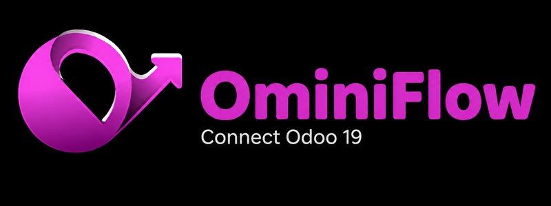
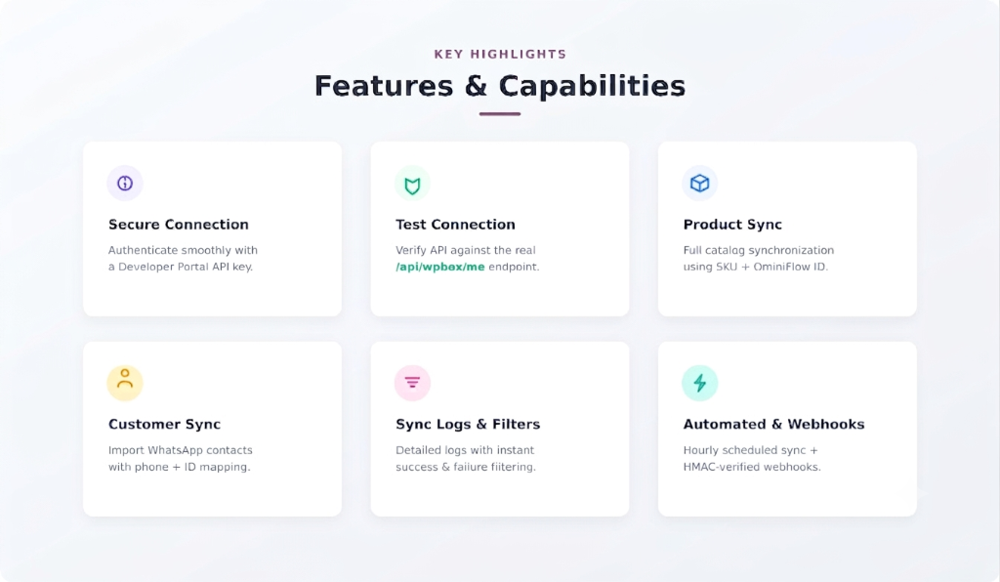
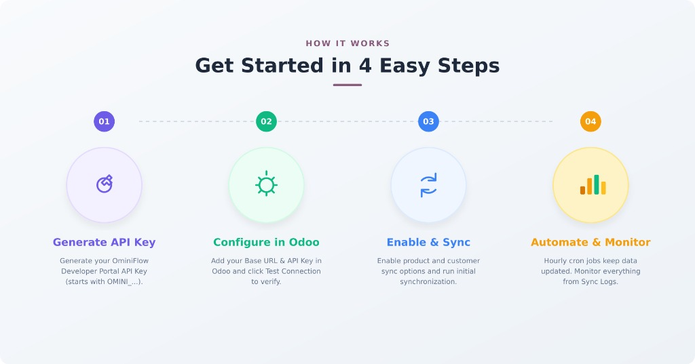
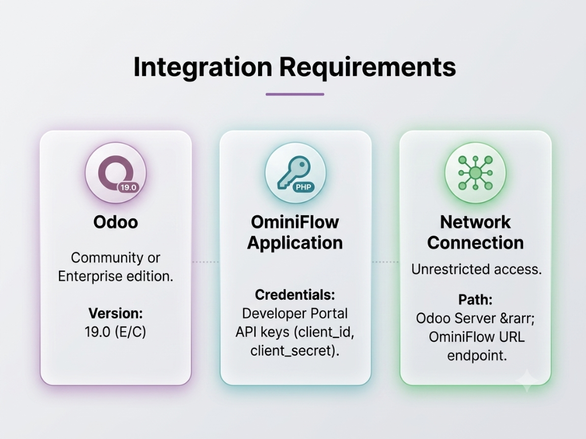
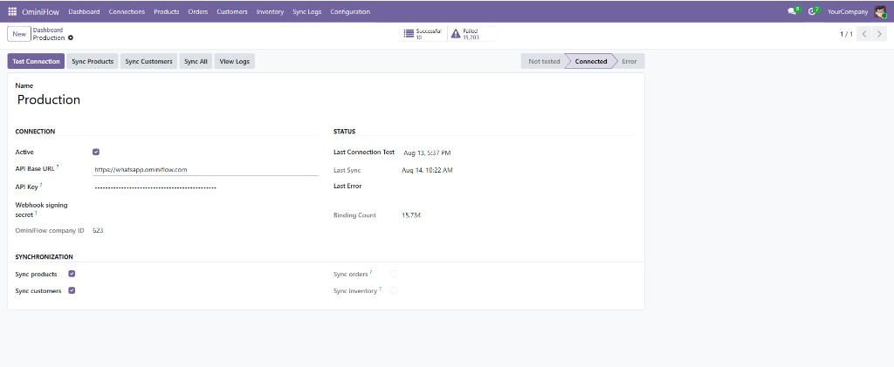
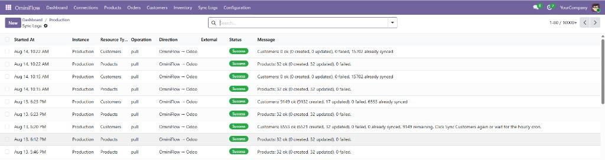
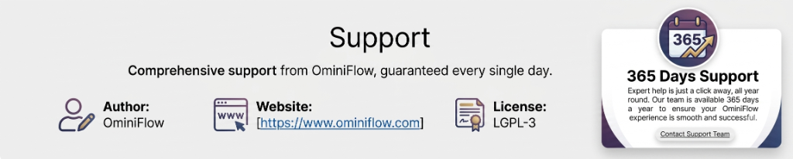

OminiFlow is a WhatsApp commerce and messaging platform. This module is an Odoo 19 connector only. It talks to the existing PHP backend over HTTPS. It does not replace OminiFlow and does not access the OminiFlow database directly.

This connector uses the public OminiFlow REST APIs used by the Developer Portal and catalog tools:
Sales order sync and warehouse inventory moves are not included, because OminiFlow does not currently publish those REST APIs.

Products are matched by OminiFlow id, then by SKU. Contacts are matched by OminiFlow id, then by phone, then by email. The same sync can be run twice without creating duplicate Odoo records.
Catalog stock_quantity is stored as a product field for reference. Odoo warehouse quantities are not changed.

Production connection to OminiFlow with Test Connection status Connected. Product and customer sync enabled. Order and inventory sync are not available.

Product catalog and WhatsApp customer pull from OminiFlow into Odoo, with success status.

